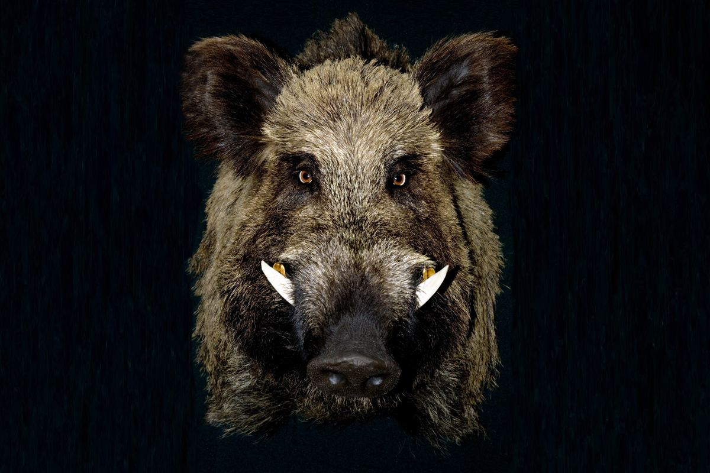
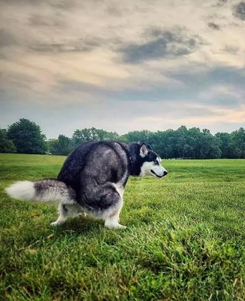
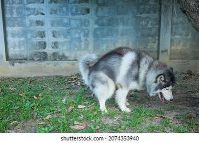

Some of us need a door that locks and a room to ourselves. Find single-stall restrooms across the Storrs campus.
Find a restroomFind a private, single-stall restroom on campus. Tap a pin for floors and exact spots.
Privacy, comfort, and a lot less pressure. Single-stall restrooms are also open to everyone, and that includes our four-legged friends who just need the right spot.


